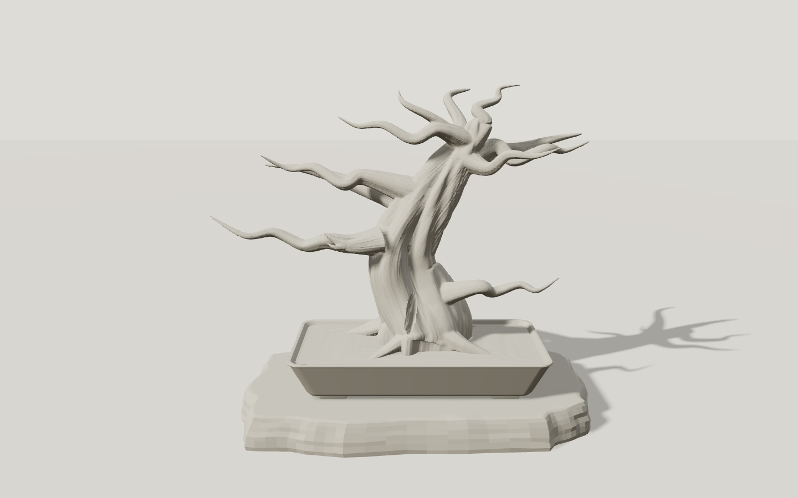
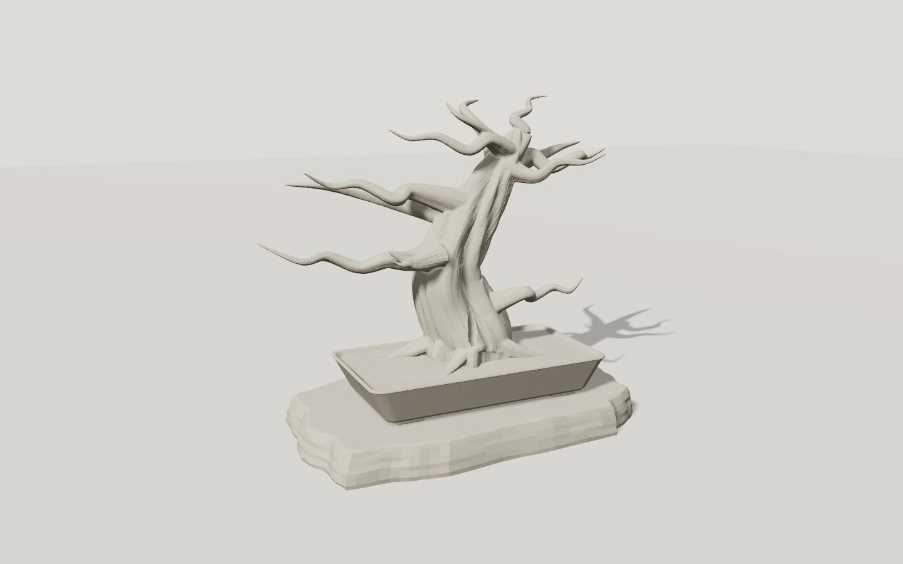
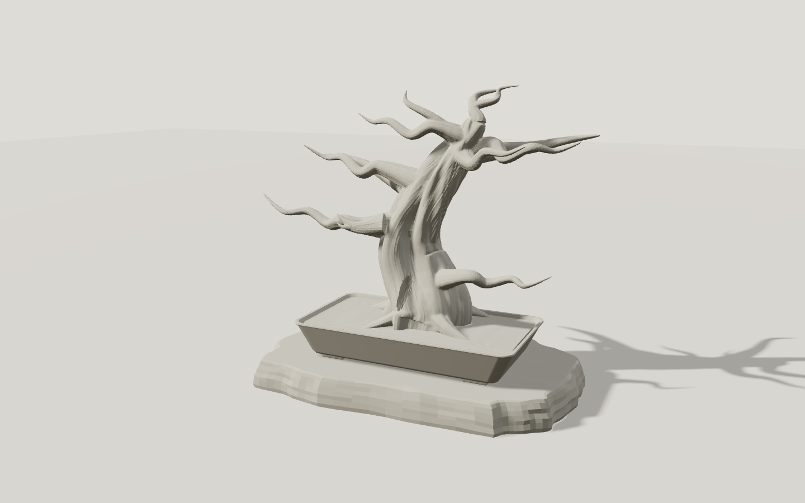
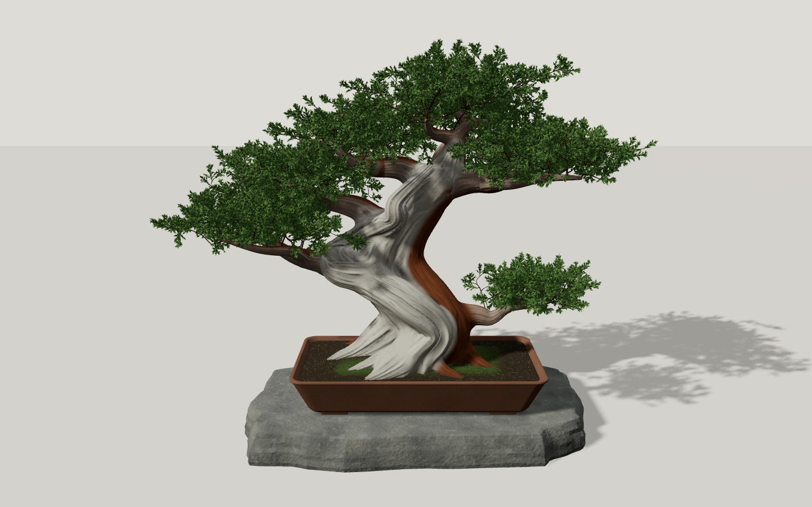
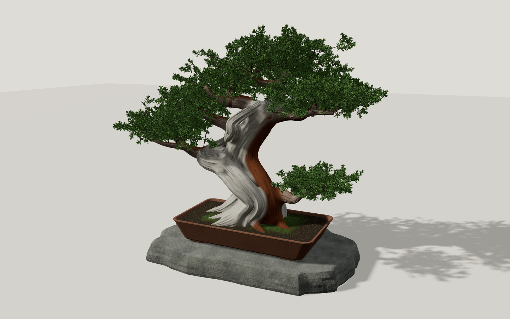
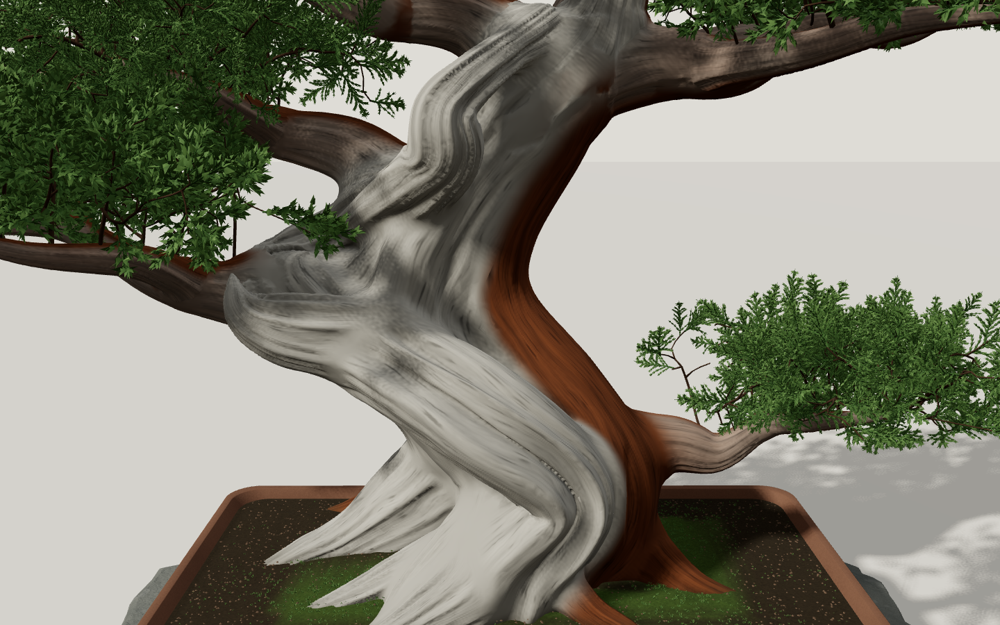
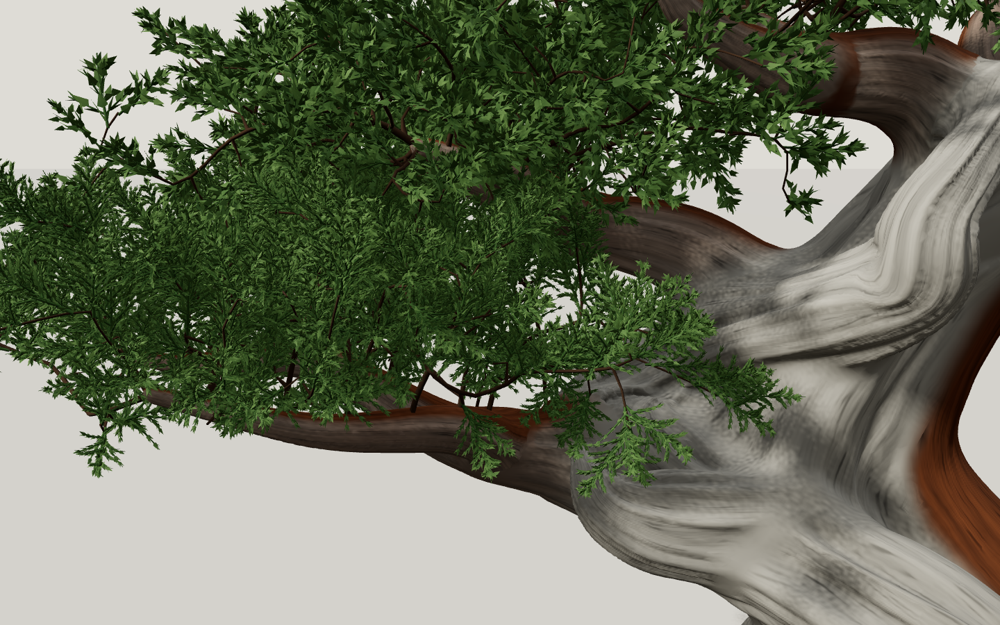
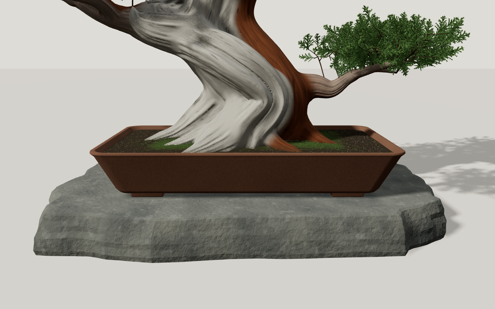
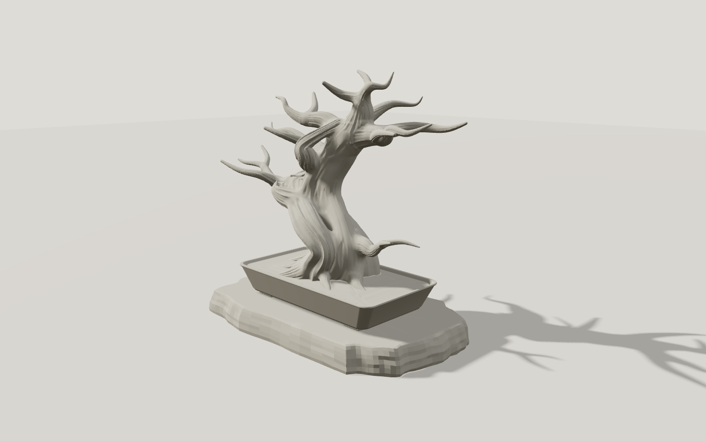
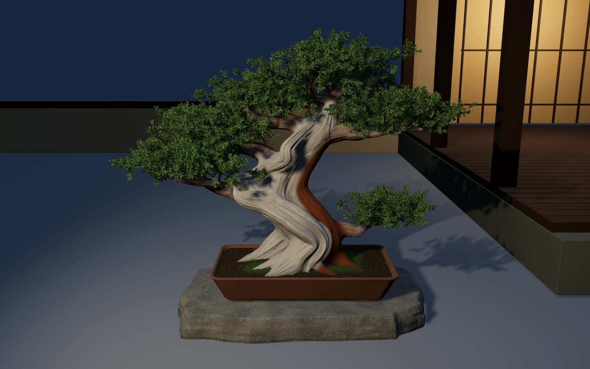

盆栽 工程2・実ブラウザ比較
v23を編集可能な工程成果として保存。根・幹・枝の立体構造と葉の階層は改善したが、名品としての造形と庭全体の完成基準は未達。rootの09bestは変更していない。これは検証資料であり、サイト本体は可視文字を表示しない。
判定・検証報告 · 44項目の本番検証 · GPU実測
単色・同じカメラ範囲と光

前工程 v27 正面 工程2 v23 正面。連続体積は改善、規則的な溝は未達。
工程2 v23 正面。連続体積は改善、規則的な溝は未達。
v27 −25° v23 −25°
v23 −25°
v27 ＋25° v23 ＋25°
v23 ＋25°素材と近接

自然な材質の差と枝間の空隙を確認
＋25°。影・枝の重なりが実際に変わる3D
木肌は未達。滑らかな面と長い並行の流れが残る
枝→細枝→閉じた立体の鱗葉。近接用と遠景用を併用
土の盛り、苔と粒、鉢脚と石の接触
＋45°の構造確認PC 1440×900
 前工程 v27
前工程 v27 v23。背景は仮配置のままで、完成判定していない
v23。背景は仮配置のままで、完成判定していない個別の縦構図・390px / 320px
 v27 390×844
v27 390×844 v23 390×844
v23 390×844 v27 320×568
v27 320×568 v23 320×568
v23 320×568代替静止画
最初のHTML内の軽い同一景色。外部の高解像度画像を待つ間に表示
WebGL不可時。v23の実描画から保存した静止画200000B/s・150ms遅延の読み込み中実装と画像はMac内のローカル保存。Library IDなし。GPU計測も同じMacであり、実スマートフォンの性能を証明するものではない。